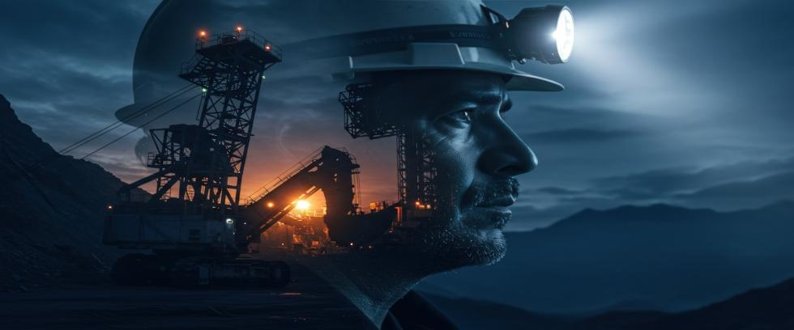

Zeks had been dropping like flies in the uranium mines and nuclear facilities of the Soviet Union. “Zek” is Russian slang for a prisoner.
When the Soviet Union decided to build nuclear weapons, it required more than scientists, engineers, and uranium. It used slave-labor prisoners as well. Lots of them. Former prisoners of war, political dissidents, and even ordinary citizens found themselves sacrificed in pursuit of the power found inside of atoms.
Male teenagers could wake up in the morning to be arrested for various crimes against the state under provisions of Article 58, paragraph 10. Those usually amounted to false charges of anti-patriotism, but off the Gulag they went, typically sentenced to five years of hard labor.
Their existence is rarely mentioned in official accounts of Soviet nuclear glory, but without them the Soviet Union would never have been a nuclear power.
The System Behind the Weapons
The Soviet Gulag under Joseph Stalin became one of the largest forced-labor camp systems in history. At its peak, it held more than 2.5 million prisoners at one time. Wikipedia says over 11 million zeks passed through its camps altogether — a captive workforce at negligible cost.
What percentage of zeks worked in the atomic gulag is unknown, but a massive effort was required. From mining, refining, and enriching uranium, to huge secret cities not shown on maps, millions of people were involved in one way or another.
Soviet leadership demanded rapid results. The Gulag was delivered through fear, intimidation, and sheer brutality.
Uranium at Any Cost
When it came to building Soviet nuclear weapons, uranium mining was the most dangerous work. Mine called Hope or Longed for One were not named that way out of sympathy or compassion.
Soviet mines were deep in remote areas of Central Asia, Eastern Europe, or worse yet, isolated camps near Magadan in Eastern Siberia. Health care and medicine did not exist. Living conditions were bleak, with poor ventilation, constant radiation exposure, and scarcely enough food to stay alive.
Despite a lack of official records, statements exist from uranium gulag survivors like Alexander Chauhulin. Forced to work in the Beshtau mine in southwest Russia for “political crimes,” Mr. Chauhulin toiled brutally long hours beside 5,000 other prisoners each day. He recalled trainloads of fresh prisoners arriving weekly to replace those who succumbed to the harsh conditions or were shot for one reason or another.
Eventually freed, he was warned by KGB agents that he would be hunted down and killed if he ever spoke about his experience. But after 12 years of fearful silence, Mr. Chauhulin sat for an interview with the British Independent Television network in 1986. Three months later, he disappeared.
Zeks working in the uranium Gulag breathed radioactive dust every day. Many collapsed at work or died in makeshift infirmaries. Their bodies were quietly buried in unmarked graves so work could continue without delay. Others were thrown down abandoned mine shafts, but only after smashing their heads with a hammer, so no one escaped by faking death.
Human life was expendable. Tonnage delivered was not.
Secret Cities
Uranium mining is an ugly business, but the scientific communities of Arzamas-16, Sverdlovsk-44, and Chelyabinsk-40 became the Soviet Union’s pride and joy. Secretly, of course. Wiped clean from maps like they never existed, they housed the physicists, engineers, and military officers who produced the nuclear materials and built the atomic bombs.
But the civil and mechanical infrastructure was built by skilled prisoners who would never enjoy the fruits of their labor. They lived in meager barracks behind barbed wire. Many mysteriously disappeared when their work was done.
A Lasting Legacy
Environmental contamination at some of those facilities still poses a danger today. Lake Karachay near the Mayak plutonium reprocessing plant is a good example. It was one of several artificial reservoirs built for “temporary storage” of liquid, high-level radioactive waste in the 1950s.
Never properly decontaminated, radiation on the shoreline still exceeds 600 roentgens in places – a deadly dose after an hour of unprotected exposure. Wind over the reservoir might pick up water vapor that sometimes forms a radioactive fog over the countryside.
It is generally agreed that Hanford – Mayak’s sister city in Washington State – is the most toxically polluted place in the Western Hemisphere. But almost everyone agrees that Mayak is the most toxically polluted place in the world.
A terrible price was paid by atomic gulag prisoners who worked in close proximity to strong radiation under brutal conditions until they died. They helped to build the mightiest weapons on Earth, but their names are not found in history books.
Stalin’s Utopia
The Mayak nuclear reactor was built to produce plutonium for weapons, but almost immediately it suffered an incident that probably killed more people than the famous Chernobyl disaster four decades later.
What no one knew back then is that aluminium is corroded by strong radiation in the presence of water.
Mayak’s cooling system pumped water through 1,124 aluminum tubes that ran through the reactor. Inside the tubes were about 39,000 aluminum-coated uranium cylinders about 2” in diameter and 4” long. Some of the uranium would slowly transform into plutonium as it underwent radioactive decay.
But five months after startup, corroded aluminum tubes began leaking cooling water into the core. It was a systemic problem with no easy fix, so the reactor was shut down.
There were two choices.
The uranium cylinders were perhaps halfway through the process of being irradiated for weapons-grade plutonium. Those dangerous “slugs” could be removed by hand, and new tubes installed that were coated with a corrosion-resistant material. The partially irradiated slugs could also be coated and placed into the new tubes to finish their cycle. But that meant extended hands-on work with highly radioactive materials.
On the other hand, the dangerous slugs could be removed and discarded, and the new tubes loaded with fresh uranium slugs that had never been irradiated and were reasonably safe to handle. But replacing the slugs with fresh ones meant starting over from scratch and losing five months in the process.
Was there really any question which choice would prevail in Joseph Stalin’s utopia? Every slug was manually unloaded, coated for corrosion resistance, and replaced by hand in around-the-clock shifts that lasted 39 days.
Everyone involved with the project suffered early deaths from radiation exposure. Altogether, at least 2,089 fatalities were officially attributed to radiation sickness at Mayak, but that number does not include prisoners.
No records are available for those who performed the physical work, but it’s certain they suffered the worst consequences. Stalin demanded nuclear weapons quickly and hardly cared about human life to get them.
Weapons Built on Secrecy and Sacrifice
The Soviet Union celebrated its successful nuclear program as a triumph of science and ingenuity. But behind it all was a terrible truth: Soviet nuclear weapons had cost an untold number of innocent lives.
As the world admired elaborate missile parades and dramatic military posturing, few realized the extent to which fear and brutality had powered the Soviet nuclear machine. But Joseph Stalin’s campaign to build nuclear weapons was kept secret. Stalin was not subject to media scrutiny and, unfortunately, died before his crimes were exposed for the world to see.
A Continuing Legacy
The Gulag system dissolved when the Soviet Union collapsed in 1991. But nuclear weapons remained. Today, amid rising geopolitical tensions and the war in Ukraine, it is certainly noteworthy that Russia maintains the world’s largest stockpile of nuclear warheads – including more tactical nukes than the rest of the world combined.
Nuclear arsenals threaten catastrophic destruction long after the people and governments that built them are gone. Prisoners of the atomic gulag vanished decades ago, but the legacy they helped build lives on.
The Path Forward
At Our Planet Project Foundation, we believe that – without warning and on any given day – nuclear weapons might kill almost every human being on Earth and end our civilization for a very long time.
The legacy of Soviet zeks should not be seen as a footnote to the Cold War, but as a warning that ethical behavior breaks down when societies equate national pride and security with their ability to kill. A world that maintains nuclear arsenals capable of ending civilization will eventually use those arsenals unless a way is found to eliminate them first.